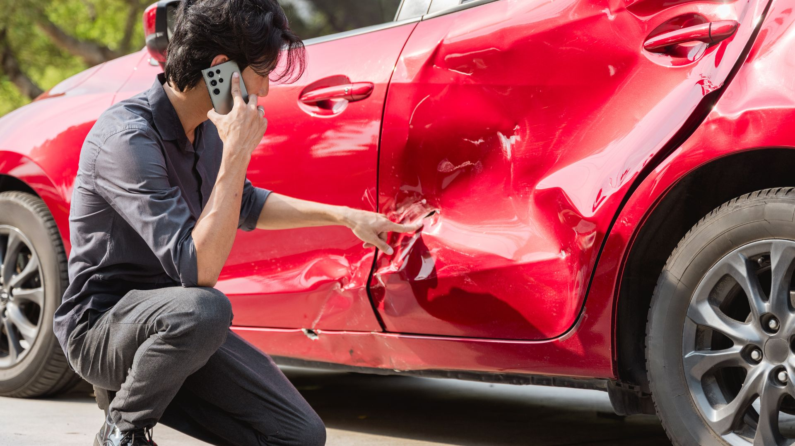
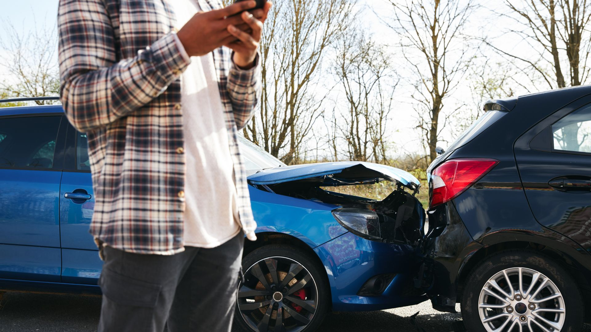

What to Do After a Madison County Car Wreck: 5 Easy Steps to Protect Yourself
A car wreck can leave you shaken, confused, and unsure what to do next. One moment you are driving like any other day. The next, you are hearing the sound of impact and trying to process what just happened. It is common to feel overwhelmed in those first few minutes. Your heart may be racing. You may not even realize right away if you are hurt.
In the hours that follow, new concerns often set in. Is anyone seriously injured? How bad is the vehicle damage? Who was at fault? How will medical bills be paid? What should you say to the insurance company?
At The Lackey Law Firm, we have worked with Madison County families for decades, and we understand how stressful those early moments can be. If you are searching for a personal injury lawyer near me, it likely means you are already dealing with some of these questions. You may be juggling doctor appointments, repair estimates, and phone calls from insurance adjusters. It can feel like a lot to handle at once.
This guide walks through five simple, practical steps Madison County drivers should take after a crash. Understanding what to do early can help protect your health, preserve important information, and prevent costly mistakes later.

Step 1: Check for Injuries and Call 911
Right after a crash, your first priority should always be safety.
Take a moment to check yourself for injuries. Then check on your passengers. If others are involved, see if they appear hurt. Even if everyone seems “okay,” it is still important to call 911.
Some injuries do not show symptoms immediately. Adrenaline can mask pain. You may not notice stiffness, dizziness, or soreness until hours later. Emergency responders can evaluate the situation and decide whether medical treatment is needed.
Calling law enforcement is also important because it creates an official accident report. That report documents:
- The date and location of the crash
- The drivers involved
- Statements from both parties
Observations from the responding officer
This report often becomes a key piece of information later when determining fault and handling insurance claims.
Even in what feels like a minor collision, having proper documentation can protect you if disputes arise later.
Step 2: Move to a Safe Area and Stay Calm
If your vehicle is drivable and it is safe to do so, move it out of traffic and turn on your hazard lights to alert other drivers. Reducing the risk of a secondary collision is one of the most important steps you can take immediately after an accident.
To help protect yourself and others:
- Move your vehicle to the shoulder, a parking lot, or another safe location nearby if possible.
- Turn on your hazard lights right away.
- If available, use road flares or warning triangles to increase visibility.
- Check your surroundings before exiting your vehicle.
- Take slow, steady breaths to help manage adrenaline.
- Avoid arguing or discussing fault with the other driver.
- Keep conversations brief and focused on exchanging necessary information.
If vehicles cannot be moved, remain inside with your seatbelt fastened unless staying inside creates a greater danger.
It is normal to feel shaken, frustrated, or even angry after a crash. However, emotional reactions can make the situation more difficult. Staying calm helps you think clearly, communicate effectively, and avoid saying something that could later be misunderstood.
Pay attention to your physical condition during this time. If you begin to feel dizzy, disoriented, or in pain, let emergency responders know immediately. Even if injuries seem minor, monitoring how you feel in the minutes following the crash is important.
Step 3: Gather Information and Document the Scene
Once everyone is safe and authorities are on the way, begin collecting information.
Exchange the following details with the other driver:
- Full name and contact information
- Driver’s license number
- Insurance company and policy number
- Vehicle make, model, and tag number
Then, use your phone to document the scene. Take clear photos of:
- All vehicles involved
- Damage from multiple angles
- Road conditions
- Traffic signs or signals
- Any visible injuries
If there are witnesses nearby, politely ask for their names and contact information. Independent witness statements can become important if there is disagreement about what happened.
The more accurate information you gather early, the easier it may be to sort out insurance issues later.
Step 4: Seek Medical Attention as Soon as Possible
Even if you do not feel seriously injured, it is wise to see a medical professional after a crash.
Some common accident injuries, such as whiplash, concussions, or soft tissue injuries, may take time to appear. Getting evaluated quickly helps ensure that:
- Injuries are properly diagnosed
- You begin treatment early
There is medical documentation connecting your injuries to the crash
Delaying care can make recovery harder and may complicate the claims process. Follow your doctor’s instructions and attend all recommended appointments.
Your health should always come first.
Step 5: Be Careful When Dealing with Insurance Companies
After a wreck, insurance companies often reach out quickly. The adjuster may ask for a recorded statement or offer a fast settlement.
It is important to understand that insurance companies are businesses. Their goal is often to resolve claims efficiently and control costs.
Before agreeing to a settlement or giving a detailed recorded statement, make sure you understand:
- The full extent of your injuries
- The total cost of medical treatment
- Whether you will need ongoing care
The impact on your ability to work
Once a settlement is accepted, you typically cannot ask for additional compensation later, even if your injuries turn out to be more serious than expected.
Taking time to review your options carefully can help you avoid making a rushed decision during an already stressful time.

Why Taking the Right Steps After a Madison County Car Wreck Matters
The actions you take after a car wreck can have lasting effects on your health, your finances, and your ability to recover compensation. What may feel like small decisions in the moment, such as whether to seek medical care right away or what to say to an insurance adjuster, can later carry significant weight.
Proper documentation helps establish what happened and who may be responsible. Prompt medical treatment not only supports your recovery but also creates a clear record connecting your injuries to the crash. Careful communication with insurance companies helps prevent misunderstandings that could delay or reduce a claim.
In Alabama, fault laws are strict. Even minor details can influence how a claim is evaluated. When important steps are missed early on, it can become more difficult to resolve issues later.
Taking thoughtful, informed action after a Madison County car wreck helps protect both your immediate well-being and your long-term interests.
Steady Legal Guidance After a Serious Car Accident
After a serious car accident, many people are unsure what to do next. Medical appointments, insurance paperwork, and missed time at work can quickly become overwhelming. We provide clear and practical guidance as your personal injury lawyers to individuals and families in Madison County who are navigating these challenges. We review accident reports, help organize medical records and expenses, and communicate with insurance companies to ensure our clients understand their options under Alabama law. Our approach is straightforward and focused on helping you make informed decisions while you concentrate on your recovery.
Trusted by Madison County Clients for Decades
For more than four decades, The Lackey Law Firm has worked with individuals and families throughout Madison County during some of the most difficult times in their lives. Clients often value the consistency and experience that comes from a firm rooted in the local community. Many appreciate being treated with patience and respect, receiving clear answers to their questions, and knowing their concerns are taken seriously. Our long-standing presence in North Alabama reflects a steady commitment to providing thoughtful and reliable legal guidance.
Common Questions After a Madison County Car Wreck
After a car wreck, it is normal to have questions about what happens next. Medical care, insurance claims, and legal timelines can feel confusing, especially while you are trying to recover. Below are answers to some of the most common questions drivers in Madison County ask after an accident.
1. Do I need to call the police after a car wreck in Madison County?
In most situations involving injuries or significant vehicle damage, contacting law enforcement is important. A police report creates official documentation of the crash, which can help when filing an insurance claim or resolving disputes about fault.
2. What if I do not feel injured right away?
It is still a good idea to seek medical attention. Some injuries take hours or even days to appear. Getting evaluated early helps protect your health and creates medical documentation connected to the accident.
3. Should I give a recorded statement to the insurance company?
You may be asked to provide a recorded statement soon after the crash. While you can share basic information, it is important to understand what you are being asked and why. Taking time to review your situation before giving detailed statements can help prevent misunderstandings.
4. How long do I have to file a car accident claim in Alabama?
In many cases, Alabama law allows two years from the date of the accident to file a personal injury lawsuit. However, certain factors can affect that timeline, so it is important to understand how the law applies to your specific situation.
5. What types of damages can be recovered after a car wreck?
Depending on the circumstances, compensation may include medical expenses, lost wages, property damage, and other accident-related losses. Each case is different, and the outcome depends on the facts involved.
6. When should I speak with a personal injury attorney?
You may consider speaking with a personal injury attorney if you have suffered injuries, if fault is disputed, or if a settlement offer does not seem to cover your losses. Getting clear information early can help you make informed decisions moving forward.

Helpful Alabama Car Accident Law Resources
Understanding how Alabama law applies after a car wreck can help you make informed decisions. The following resources from Justia provide reliable legal background on key legal concepts related to personal injury claims:
According to Justia’s Proving Fault and Damages in Personal Injury Lawsuits, most injury claims are based on the legal concept of negligence, meaning one party’s failure to exercise reasonable care leads to another’s harm.
Alabama’s time limits for filing a personal injury lawsuit are important to know. Alabama Code § 6-2-38: Commencement of Actions sets a general deadline of two years from the date of the injury for bringing most negligence-based claims, including car accident cases.
Reviewing these resources can provide useful context about how fault is determined, the types of evidence involved, and the deadlines that may affect a Madison County car wreck claim. However, how the law applies in any one situation will always depend on the specific details of that case.
Key Takeaways After a Madison County Car Wreck
After a car wreck, it is easy to feel overwhelmed by everything happening at once. Between medical concerns, vehicle damage, insurance calls, and missed time at work, important details can sometimes be overlooked. Taking a step back and focusing on a few core principles can help you protect your health, preserve important information, and avoid unnecessary complications. The following key takeaways summarize what matters most after a Madison County car accident.
✓ Your health comes first. Seek medical attention promptly, even if injuries are not immediately obvious. Early treatment supports your recovery and creates important medical documentation.
✓ Documentation matters. Photos, witness information, and a police report can protect you if fault is later disputed or questions arise during the claims process.
✓ Insurance conversations require care. What you say and when you say it can affect how your claim is handled. Taking time to understand your situation before agreeing to anything is important.
✓ Early guidance can prevent costly mistakes. Understanding your rights under Alabama law helps you make informed decisions and avoid missteps that could affect your claim.
If you have questions about your situation after a Madison County car wreck, reach out to us today by calling (256) 585-2980, or schedule a free case review to discuss your situation.